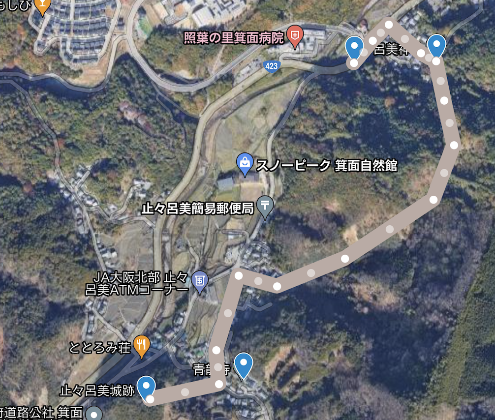
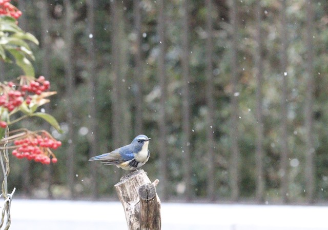
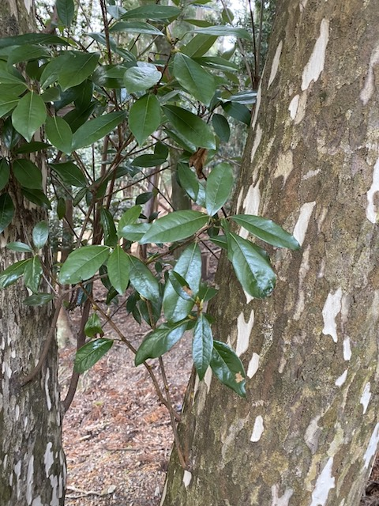
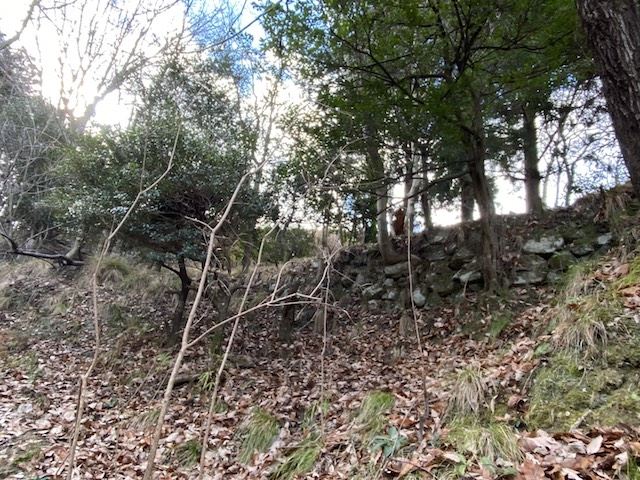
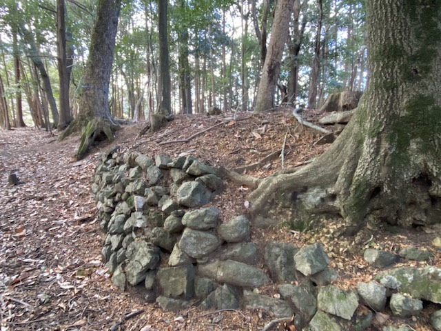
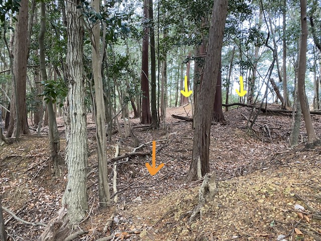
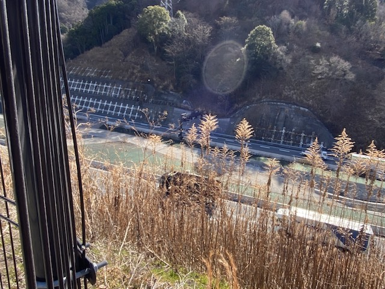

<script src="../library/marked.min.js"></script>
<head>
    <meta name="viewport" content="width=device-width">
    <link rel="stylesheet" href="library/responsive.css">
<title>
止々呂美城跡
</title>
</head>

<body>
<script>md(`
# 止々呂美城跡
<font size="2"> 2022/01/19訪問</font>
<font size="2"> 2022/01/22執筆</font>

所在地：大阪府箕面市 <a href="https://goo.gl/maps/MwLyn2MgQURNsZgA8">(34.877972,135.459297)</a><br>
交通手段：中止々呂美 (阪急バス箕面森町線1系統) から徒歩20分程度

## 訪問記
出立：阪急石橋駅を午前7時40分
<p>
博士課程の準備などなどを放り出し、平日の朝から野鳥の観察を兼ねて城跡巡り。止々呂美は千里中央からバスで20分とアクセスが良いが、都市部とは全く異なる景観が広がっている。
この界隈はゆず農園が多いようだ (そういえば、箕面市のキャラクターはゆずをフィーチャーしたゆずる君)。止々呂美神社を経由して東側から青龍寺の参道を通って城跡を攻める。
</p>
<figure><figcaption>経路</figcaption></figure><br>


<p>
止々呂美神社には4羽？のルリビタキが縄張りを持っているようだ。鳴き交わしたり喧嘩したりと忙しかった (写真1)。鳥を探しつつ山道を歩く。ゆず農園の西側には塩山城跡があるらしいがスルーしてしまったので再訪しよう。林道周辺にはシラカシと、なぜかカゴノキが多い印象があった (写真2)。途中カケスのｷﾞｬｰｷﾞｬ声も聞いた。
</p>

<figure><figcaption>写真1 ルリビタキ雄</figcaption></figure>
<figure><figcaption>写真2 カゴノキの特徴的な樹皮</figcaption></figure><br>


<p>
止々呂美城跡へ向かう道は非常に荒れているので天候不順時は注意が必要と思われる。頂上へ向けて登っていくと石垣が見える (写真3)。これが当時のものかは不明である。山の北側が果樹園に使われている(た？)ようで、そのために整備された可能性もある。
</p>
<figure><figcaption>写真3 北側の新しい石垣</figcaption></figure><br>


<p>
北西側の頂上、鳥居の奥には当時のものらしい石垣が残されている (写真4)。この奥が主郭である。写真5に示した南側には空堀の跡が確認でき (橙矢印)、そこから鳥居の方を振り返ると土塁が断続的に続いている (黄矢印、虎口を形成していたのかもしれない)。
</p>
<figure><figcaption>写真4 石垣</figcaption></figure><br>
<figure><figcaption>写真5 空堀と土塁</figcaption></figure><br>


<p>
城の東側はなだらかな斜面の自然地形であったが、2017年に開通した新名神高とどろみICの工事により大幅に削られてしまっている。ここには数多くの石垣や土塁が残っていたようで、壊されてしまったのは残念である (写真6；台状の線が自然地形？よく見ずに撮ったのだが、写真にはなぜか変な映り込みが入っている。残留思念か…)。
</p>
<figure><figcaption>写真6 残留思念</figcaption></figure><br>

## お城の情報
<p>止々呂美城は、余野川沿いの標高294mの小さな山に作られた山城である。京都、大阪、丹波の間にある北摂の山間は戦略上重要な場所であるので、川沿いの平地の脇の低山に城が多く築かれた。
築城の経緯や、廃城の年代といった詳細な情報は明らかになっていないそうだ。戦国時代の前に地元の豪族が作った可能性も指摘されている。安土桃山時代には塩山平右衛門という城主がいたが、織田信長による北摂掃討作成の一環で明け渡されてしまったらしい*。</p>


<p>このエリアでは、安土桃山時代に能勢氏 (地黄を本拠) と塩川氏 (川西を本拠) が勢力争いを繰り広げていた。この辺の話も正確なところはわかっていないようだ。最終的に、塩川氏は豊臣秀吉の圧もあり壊滅した。一方、勢力を落としつつも徳川家康について関ヶ原で奮闘した能勢氏が大阪北部の覇権を握ることになる**。</p>

### 参考文献
<a href="images/20220119_todoromi/65632_1_止々呂美城跡.pdf">公益財団法人大阪府文化財センター (2014)</a> 『公益財団法人大阪府文化財センター調査報告書246：止々呂美城跡』公益財団法人大阪府文化財センター

<font size="2">
* 例えば<a href="https://corp.w-nexco.co.jp/activity/branch/kansai/shinmeishin/topics/topics02/public/17/img/pdf_02.pdf">NEXCOのスライド</a>のようなインターネット上の情報に開城についての言及があるが、ちゃんとしたソースは見つけていません。。。<br>

**こちらも同様。But see <a href="https://noseden.hankyu.co.jp/guide/pdf/magazine/2010-aki-naka.pdf">阪急のスライド</a></font>


`)</script>
</body>